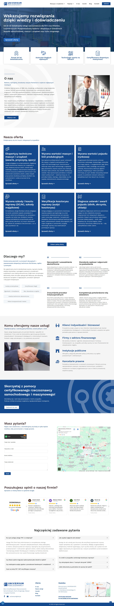
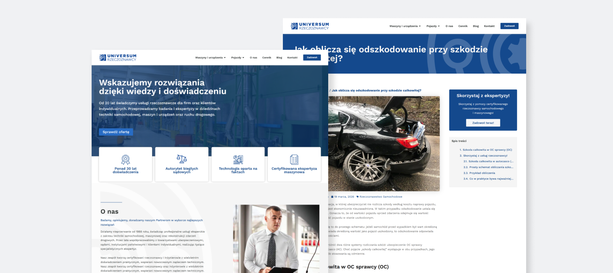
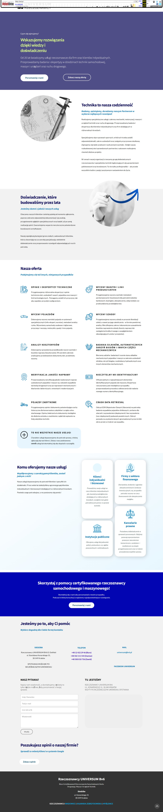
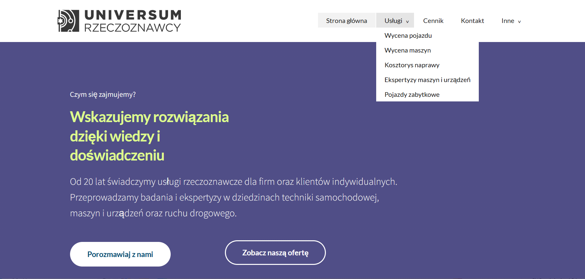
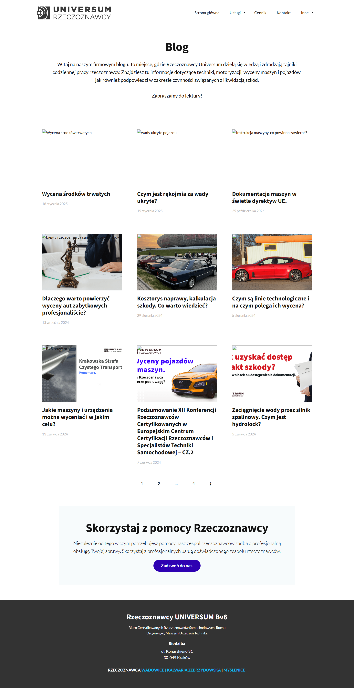
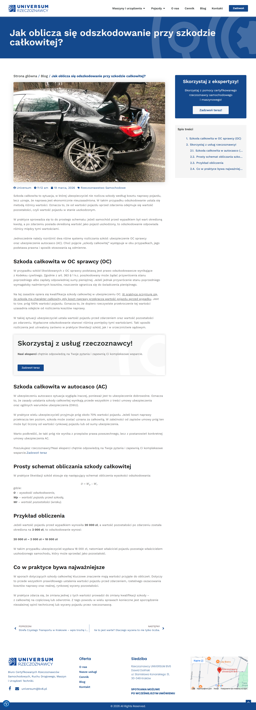
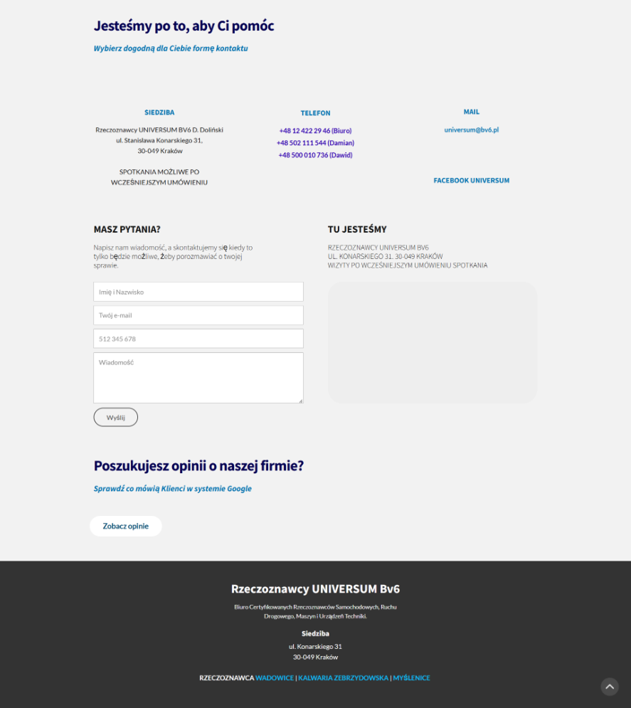
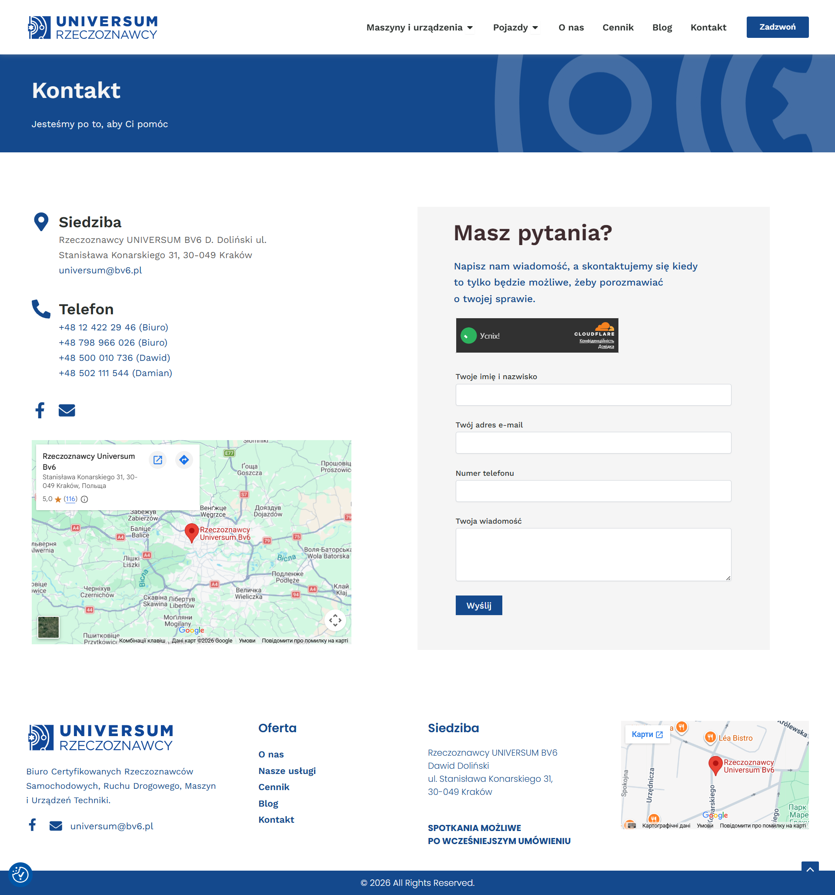
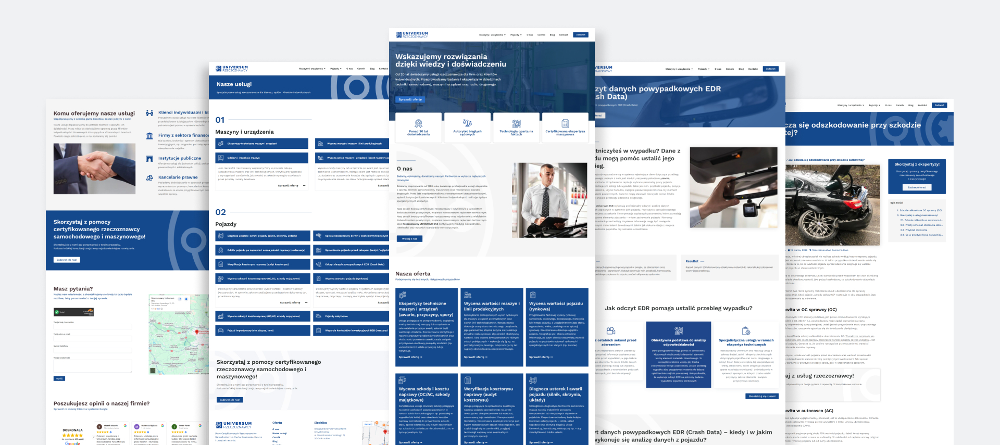
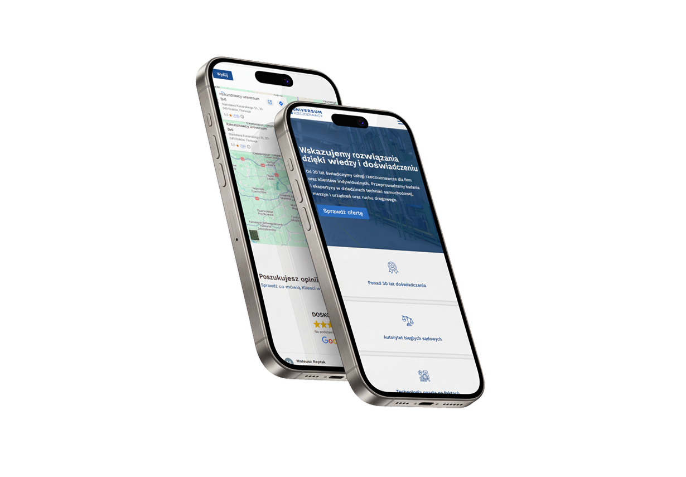

BV6
UX/UI Designer — UX audit, information architecture & rebuild
Hover the preview to scroll the full homepage →



A wider view of the rebuilt site — service pages, homepage sections and one of the new long-form guides.
Overview
BV6 is a Kraków-based office of certified technical experts (rzeczoznawcy) covering vehicles, industrial machinery and traffic-accident reconstruction. Their reports and opinions are used as evidence — by private clients disputing an insurance payout, by insurers and banks, by law firms, and by courts and public institutions.
The existing site badly undersold that authority. The client's brief was direct: expand the offer so every service is actually findable, and rebuild the site around it — without losing clarity, even though the subject matter itself (insurance law, technical inspection, legal claims) is dense by nature. I took the project end to end: audit, information architecture, content structure and the build in WordPress and Elementor.
The problem
For a business whose entire value proposition rests on depth of expertise, the old site showed almost none of it.
- A five-item offer. The "Usługi" dropdown covered vehicles only — nothing for machinery, EDR crash-data or expert-witness work. Clients had to call just to find out what BV6 actually did.
- A mystery "Inne" menu. A catch-all "Other" item with no preview of what was inside — a dead end for a first-time visitor trying to orient themselves.
- No depth for a trust-based service. A court opinion or a total-loss valuation is a serious, one-off decision. There was no process explanation, no FAQ, no visible certification.
- A thin, disconnected blog. A handful of generic posts, unlinked from the services they were actually about.
- One template for everything. Diagnostics, valuations, court opinions and EDR data read-outs are different services for different buyers, yet they all shared the same shallow page.
The same pages, rethought
Four places where the gap was widest — the old site on the left, the redesign on the right. Click any pair to compare them full-size.







Two very different buyers
Every decision traced back to one of these two people. They arrive with different questions and different stakes, so the site had to serve both without slowing either down.
The individual client
Disputing a payout or valuing their own car or machine.
- Often reaching out right after an accident or a rejected claim
- Needs plain-language reassurance before technical detail
- Wants to know the process and price before picking up the phone
The professional client
Insurers, banks, law firms and public institutions.
- Needs a named service that matches a specific procedure, not a vague pitch
- Cares about certification, court-expert status and documentation
- Orders repeatedly, so a clear structure saves real time
Design process
I ran a heuristic audit of the old site, then mapped out everything the client actually offers — most of which had never made it onto the old menu at all.
- Audit & research A heuristic review of the old site against what insurers, courts and machinery buyers actually need to trust an expert opinion.
- Information architecture One flat "Usługi" dropdown and a vague "Inne" item split into two structured menus — Maszyny i urządzenia and Pojazdy — naming every real service instead of hiding it.
- Content system One repeatable template for every service — scope, outcome, step-by-step process, pricing, FAQ — so a dozen-plus new pages could be built without reinventing the layout each time.
- UI & build Wireframes to hi-fi in Figma, shipped in WordPress and Elementor, alongside a blog restructured to actually connect to the services it explains.

The final approved designs — homepage, service pages, the rebuilt blog and contact, in one view.
From one vague item to a named, structured offer
- Wycena pojazdu
- Wycena maszyn
- Kosztorys naprawy
- Ekspertyzy maszyn i urządzeń
- Pojazdy zabytkowe
- Inne — content unknown until clicked
- Maszyny i urządzenia — own structured menu
- Diagnoza usterek i awarii pojazdu
- Wycena szkody i kosztu naprawy
- Weryfikacja kosztorysu naprawy
- Odczyt danych powypadkowych EDR
- Opinia rzeczoznawcy do VIN
- … and 7 more, each named and one click away
Find the service by name
Scan a structured menu instead of guessing what "Inne" might contain.
Read scope, process & price
Every service page answers what's covered, how it runs and what it costs.
Call or send the details
One clear call-to-action, backed by a contact form and map.
Designed for the phone that's already in hand
Many clients land on BV6 straight after a collision, or while comparing valuations on the go — not sitting at a desk. The menu, the click-to-call and every service page had to stay legible and tappable, so the dense technical content doesn't turn into a wall of text on a small screen.

Solution & results
The full range — vehicles, machinery and traffic incidents — now sits under two clear menus instead of one vague dropdown. Every service has its own page explaining scope, outcome, process and price, the blog is tied back to the services it explains, and the homepage leads with credibility before the pitch. Because it's built in WordPress and Elementor, the team can keep adding services and guides themselves.
The redesign at a glance — measured by design decisions, not vanity metrics.
View the live site
To see the redesign in action — the structured offer, the service-page template and the rebuilt blog — visit the live BV6 website.
Visit bv6.pl →Read more of my case studies


👋 Get in touch at
julidovha05@gmail.com